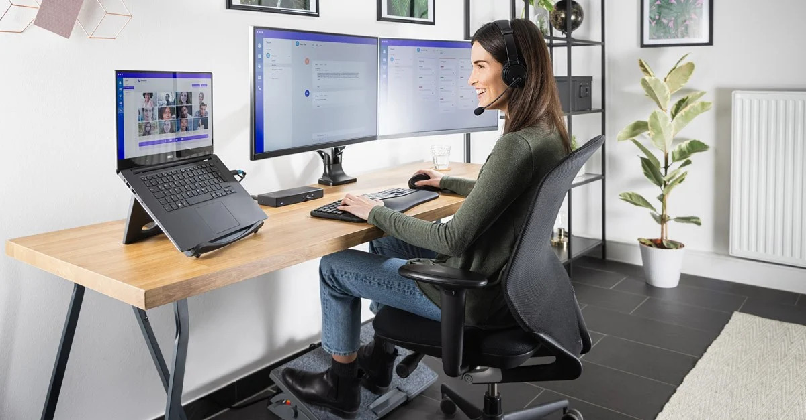

Introduction
The modern workplace has evolved significantly over the years, with many jobs now demanding long hours of screen time, minimal physical activity, and high mental engagement. While this environment promotes productivity and innovation, it also introduces health challenges that can hinder both performance and well-being. From chronic back pain caused by poor posture to the mental stress of meeting tight deadlines, workplace health issues are becoming increasingly common.
Many professionals overlook their health amidst their busy schedules, leading to lifestyle-related diseases, fatigue, and reduced efficiency. However, achieving a balance between professional success and personal wellness doesn’t require drastic changes—it can be accomplished through small, consistent actions. Healthy employees are not only happier but also more productive, which creates a win-win scenario for both individuals and organizations.
This blog delves into practical, evidence-based tips for staying healthy in the workplace. Whether you are working from home or in a traditional office setting, these strategies can help you cultivate habits that support your physical, mental, and emotional well-being. From adopting ergonomic furniture to prioritizing mental health, we will explore actionable ways to create a healthier work environment and a more fulfilling career.
Adopt Healthy Habits
Incorporating healthy habits into your daily routine at work can have a significant positive impact on your physical and mental well-being. Simple activities such as standing up every 30 minutes, stretching, and taking short walks can reduce the harmful effects of prolonged sitting. These practices help improve blood circulation, reduce muscle stiffness, and enhance overall energy levels.
Consider integrating short, structured breaks into your schedule using techniques like the Pomodoro method. This involves working in focused intervals of 25-30 minutes, followed by a 5-minute break, allowing your mind and body to reset. During these breaks, engage in quick stretches or light exercises to keep your body active.
Healthy snacking is another important habit. Replace junk food with nutritious options like nuts, fruits, or yogurt, which provide sustained energy and reduce the risk of afternoon energy slumps. Additionally, avoid eating lunch at your desk; step away to enjoy your meal, as this can help you recharge both physically and mentally.
Posture plays a crucial role in your health. Maintain an upright posture while working to avoid strain on your back and neck. If your job involves long hours of typing or using a mouse, stretch your hands and wrists regularly to prevent repetitive strain injuries.Finally, use reminders or apps to ensure you are consistent with these habits. Over time, these small actions can lead to significant improvements in your overall health, productivity, and workplace satisfaction.
Use Ergonomic Furniture
Ergonomic furniture plays a crucial role in creating a comfortable and healthy workspace. Investing in an adjustable chair that supports your lower back and maintains the natural curve of your spine can help prevent chronic back pain. Look for chairs with features like lumbar support, adjustable height, and cushioned seating for maximum comfort.
Using a height-adjustable desk allows you to alternate between sitting and standing positions throughout the day. This reduces the risk of health problems linked to prolonged sitting, such as poor circulation and posture-related issues. Standing desks can also boost energy levels and improve focus.
Position your computer monitor at eye level to avoid straining your neck. A monitor riser or stack of sturdy books can help achieve this alignment. Ensure your keyboard and mouse are positioned close to your body, with your wrists and elbows at a comfortable angle to avoid repetitive strain injuries.
Footrests can provide additional support for those who cannot comfortably reach the floor when seated. They help maintain proper leg posture, preventing discomfort and swelling caused by prolonged sitting.
Lastly, incorporating ergonomic accessories like wrist rests, anti-fatigue mats (for standing desks), and noise-canceling headphones can further enhance your workspace. By prioritizing ergonomic solutions, you not only improve comfort but also promote productivity and long-term health in the workplace.
Stay Hydrated
Staying hydrated is essential for maintaining focus, energy levels, and overall productivity throughout the day. Dehydration can lead to fatigue, headaches, and difficulty concentrating, which can negatively affect your work performance. It is important to drink water regularly, especially during long hours at the desk. Keeping a water bottle nearby ensures that you are constantly reminded to drink water without interrupting your workflow.
Additionally, hydrating with beverages like herbal teas or infused water can provide a refreshing change while still supporting hydration. Aim to drink at least 8 cups of water per day, or more if you are physically active or in a warm environment. Remember that proper hydration is not just for physical health—it also improves cognitive function, mood, and creativity at work.
Prioritize Mental Health
In today’s fast-paced and demanding work environment, mental health is just as important as physical health. Chronic stress, anxiety, and burnout can significantly impact your performance and well-being. Prioritizing mental health not only improves your work efficiency but also helps maintain a healthy work-life balance. Start by setting boundaries between your professional and personal life to avoid work overload and burnout.
Take short breaks during the day to engage in relaxation techniques, such as deep breathing exercises, meditation, or mindful walking. These practices can help reduce stress, improve focus, and refresh your mind. Creating a supportive and positive work environment also plays a crucial role in mental health. Encourage open communication, collaborate with colleagues, and seek help when needed.
Furthermore, finding time for activities you enjoy outside of work, like hobbies, spending time with family, or practicing mindfulness, can help recharge your mental state. Regularly engaging in mental health practices can significantly enhance emotional resilience, reduce anxiety, and foster a better outlook on work and life.
Conclusion
In conclusion, maintaining a healthy lifestyle at the workplace is essential not only for physical well-being but also for mental clarity and overall productivity. By adopting healthy habits, using ergonomic furniture, staying hydrated, and prioritizing mental health, employees can significantly enhance their work experience and performance. These small but impactful changes not only help prevent long-term health issues but also create a positive and thriving work environment. It is important to remember that small, consistent efforts can lead to lasting improvements in both personal and professional life. Prioritize health to enjoy a more fulfilling and productive work life.